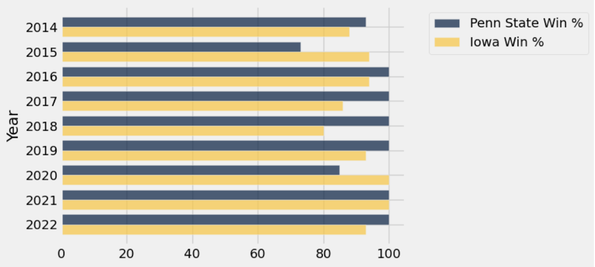
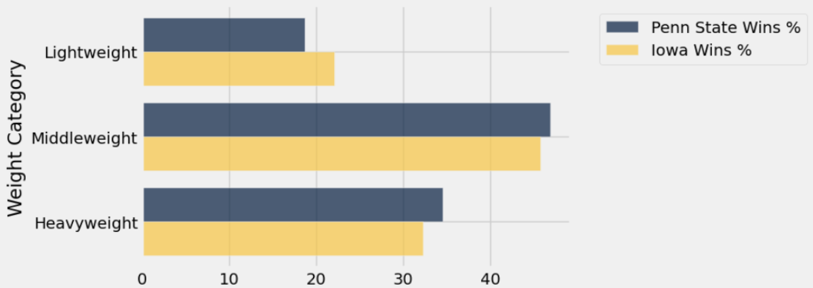
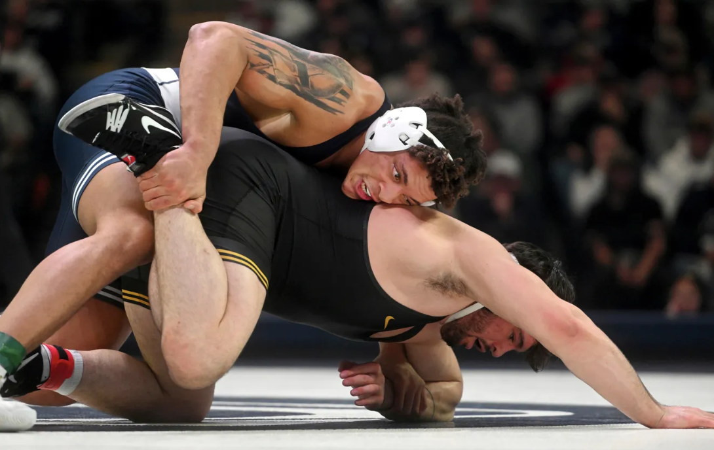
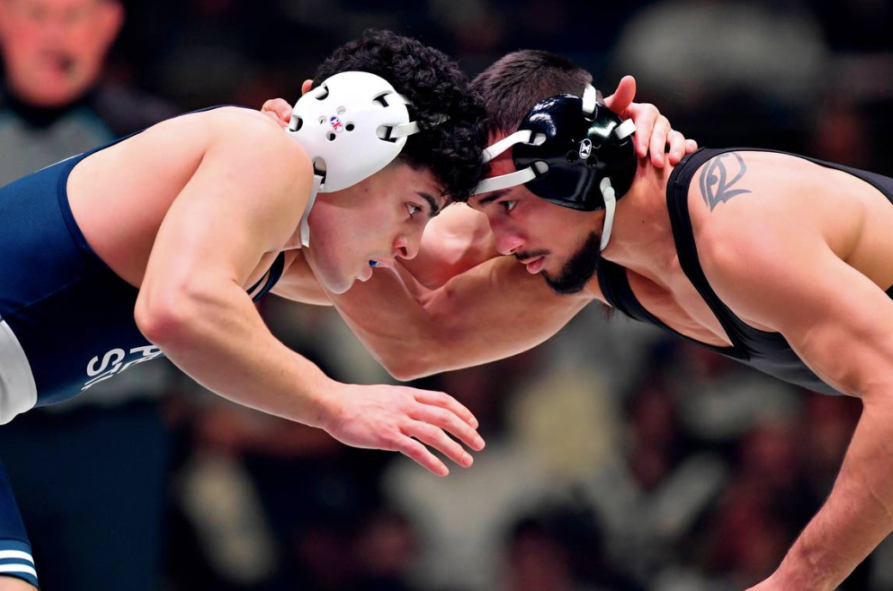
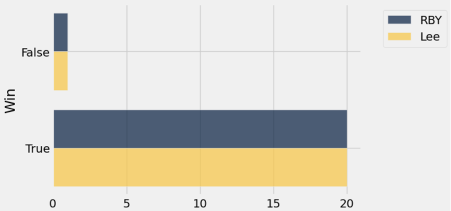
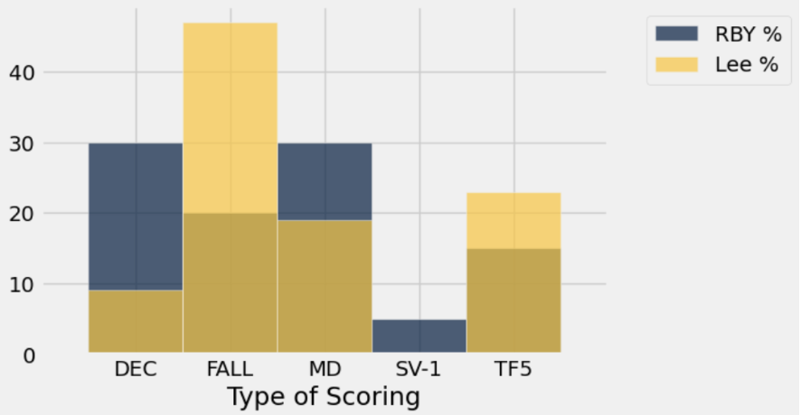

Penn State and Iowa: A Look at the Kings of Collegiate Wrestling
By Sanjana Alluri | November 10, 2023

When the general public thinks of wrestling, many people think of the WWE or AWE. However, this article will explore some of the most talented and smartest wrestlers in the country: collegiate wrestlers. That’s right; we aren’t smelling what the Rock is cooking but instead the heat between Penn State and Iowa University, two schools that hold the top ranks in the Big Ten league. For those who are not familiar, Penn State’s Nittany Lions wrestling program (founded in 1909) and Iowa’s Hawkeyes (founded in 1911) wrestling team have been known for their strong wrestling tradition and creating stellar athletes, many of whom often achieve success at international and Olympic levels. As a result, both teams have been avid rivals, attracting huge crowds for their highly-anticipated dual meets every year.
This article will explore these teams in terms of general statistics, including their performance over the recent years since 2014, and how their lightweight and heavyweight brackets compare. Then we will get up close and personal with two specific star players: Iowa’s Spencer Lee at 125lbs and Penn State’s Roman Bravo-Young at 133lbs. We will explore their stats over their careers and tendencies when on the mat, and even try answering the everlasting question surrounding the two: who would win in a match against each other?
The Teams as a Whole
It’s a given that both Penn State and Iowa have stellar programs with the best recruits in the country. But nothing is ever that equal and fair. In terms of comparison, Iowa is traditionally known for being dominant in wrestling, and this can be seen from the countless NCAA championships in their name. Penn State, however, surged to success after coach Cael Sanderson joined the team in 2009. Just to give you an idea of how much of a powerhouse this guy is, he won an Olympic gold at the 2004 Olympics in Greece, and, through his entire 4-year college career, boasted a record of a perfect 159 - 0 with 4 NCAA titles to go along with that. That being said, both teams are now perfect competitors for each other, and as a viewer, it’s exciting to see how their dynamic changes every season. I took their team win percentages from every season from 2014, and made a bar graph of them against each other to really give you an idea of how dominant both these programs are.
For avid wrestling fans, this graph isn’t really necessary; it's clear that both teams have often had perfect seasons, and otherwise close to perfect ones. What would be interesting, though, would be to see how these teams fare when comparing their players by weight. To make this distribution a little more straightforward, I binned the players from each team into three categories: lightweights, middleweights, and heavyweights. These categories could be roughly described as 145 lbs and under, 170 lbs and over, and everything in between as the middleweights. For the sake of comparing the most recent data, I will be using the stats from last year’s roster (2023) and each player’s record for that season to create the following bar cart.
It might be difficult to notice what to look for in these two visualizations, so let me break it down a bit. In the first chart, Penn State and Iowa are observed to have similar distributions. Both teams’ middleweight wrestlers account for the majority of their teams’ wins at above 40%, followed by heavyweights a little above 30%, and then lightweights at about 20%. In terms of comparison between teams, middle and heavyweight wrestlers from Penn State boast a slightly higher share than Iowa, while Iowa lightweights hit the 20% mark, unlike Penn State. These differences aren’t substantial enough to warrant a clear-cut difference between the two teams, though, since these shares only differ within 5% of each other. Considering these two teams are at the top of their league, it makes sense that their distributions for winning are pretty similar.
However, the second chart introduces a bit more variability. When looking at their losses, only Penn State has a change in distribution: middleweights account for a majority of 50%, followed by lightweights at under 30% and heavyweights just above 20%. Iowa still follows the middle-heavy-light order, meaning there is a significant difference in performance here. Specifically, Penn State has some out-performing heavyweights, who account for about 20% of losses but a whopping 35% of wins. Another way to look at it is that Iowa’s heavyweights account for over 10% more losses than Penn State’s. This makes one thing very clear: Penn State’s heavyweight win way more than they lose, making their performance very strong compared to Iowa’s.
Looking at Iowa, their win and loss ratios are pretty similar across all weight categories, making them a pretty consistent team. It is worth noting that none of their bins exceed 50% meaning none of the categories stand out in terms of wins or losses. This is good news for the star team and it means their coaching style has little bias or weak spot for lighter or heavier wrestlers.
Despite these nuances, it is still difficult to determine if one team is clearly better than the other. The distribution of the previous charts could also be attributed to other factors like the number of wrestlers in each weight bin I created or redshirt freshmen in each group. Redshirt freshmen are athletes who decide to “bench” for their first year for reasons like getting acclimated to college, getting used to athletic rigor, or injury. Regardless, this data helps us understand the balance within each team while getting a sense of performance by weight class.
The Case Study
Okay, we explored both teams and dove deep into their strengths and weaknesses when it comes to weight, but what about exploring a real controversy that has been prevalent in fan conversation? You might have noticed from the introduction that Lee and RBY are very close in weight…makes you wonder: if Lee had moved up to the 133 class, who would win between the two?
As much as many fans would want to stop the question there and share their obvious opinion, I say we take a more statistical approach, what do you say?
When we look at two wrestlers head to head, it's important to compare their styles and technique, information that plain statistical data cannot do justice to. RBY is known for his quick footwork, speed, and agility. Watching his matches, a collegiate wrestling novice viewer would almost think they are boring, but they are far from it. His ability to transition from a relaxed but calculated stance into a swift takedown is insane to watch – I can remember instances where I would blink and miss his shots. He is also known for his flexibility, most notably when he is trying to escape a hold or work more defensively. Here is an insane video of him doing a backflip to get out of a loose single:
Penn State’s Bravo-Young shows off athleticism against Lehigh
Of course, this isn’t textbook, but it takes a certain kind of athleticism and confidence in the sport to pull moves like that, it's what he does.
Talking about Spencer Lee is like talking about a legend. He was basically the most dominant college athlete at one point, and is rarely known for disappointing in a match (if you know you know, but this isn’t the place for Spencer Lee slander, c’mon now). His style aligned with the coveted “Iowa style” of wrestling, which is characterized by aggressive offense and a brawling mentality, wrestling not to survive, but to take the lead and dominate to make as many points possible. In addition to that, his wins are often credited to his dedication to honing the fundamentals. As a wrestler, the fundamental moves on top, bottom, and neutral are what stick with you from adolescence training all the way to college-level championships. Spencer Lee knew that and had the best obsession with keeping those moves clean and precise, leading to a very successful career in college wrestling.
Take a look at the following bar chart:
One loss each. If you didn’t believe me when I said these guys are beasts, there you go.
That being said, we can’t be complacent with just agreeing that both are great wrestlers; where's the fun in that? So many wrestling fans have brought up the idea of pitting both of these wrestlers against each other. Although this never happened, I can’t help but be inclined to model a way to find an answer to that question. I have taken data from each match in each of these players’ collegiate careers, and kept note of who won and how. In wrestling, there are two main categories for ways to win a match: by pin or by points. The ways in detail are the following:
Decision: by less than 7 points more than your opponent
1. Major Decision: by between 8-14 points more than your opponent
2. Technical Fall: by more than 15 points more than your opponent
3. Fall: a pin
4. Forfeit
5. Disqualification
Using this data can help identify some patterns regarding Lee’s and RBY’s matches. Did one of them win more matches by major decision than the other? Who pins their opponents the most often? These questions are answered by the following chart:
As a note: I’m aware that Spencer Lee is no longer wrestling with Iowa, so this analysis is assuming the obstacle of time concerning his collegiate career does not exist. This goes for RBY as well.
Let’s look at RBY first. His most common way of scoring was by regular decision or major decision with both tied at 30%. This was followed by fall and tech fall (the 5 in the label refers to the 5 points his team would gain in a dual meet) plus one match where he had a sudden victory which means the match went to overtime. Receiving a decision means a match has to go through all three periods before the winner is determined. RBY even has one match going longer than that into overtime. This makes it evident that RBY uses longer matches to strategically score points while keeping his defensive technique in place. As a result, some of his strong suits would include bottom defense and top-heavy aggression that discourages his opponent from scoring. I would say he is a pretty well-rounded wrestler.
Lee, on the other hand, has a clear strength in pinning his opponents, with almost half of his wins being scored by fall. This is followed by tech falls that also occur before a match has run through all 3 periods. With such an emphasis on scoring that cuts a match short, this data highlights how Lee has a much more aggressive approach on the mat. He is offense-heavy which helps him pin but also score a lot of points very fast to end the match early. Having a lot of tech falls also means he is good at gaining near-fall points, meaning his pinning combinations and riding techniques are a strong suit.
Considering these points, I would personally say Spencer Lee is most likely to win a match against Roman Bravo-Young. Although Roman Bravo-Young is a spectacular wrestler with an incredible IQ for the sport, the data suggests to me that he would be no match for Lee’s Iowa-style aggression. Lee has a lot of experience with gaining points fast, and with his speed, I don’t see him allowing RBY much time to build his strategy. That being said, RBY should still hold a special place in your heart, as he takes the cake for MVP for Penn State undoubtedly.
Take a look at the following matches for a real look at these guys in action:
Spencer Lee (Iowa) vs Marco Vespa (Penn State) 125lbs
Austin DeSanto vs. Roman Bravo-Young: 2022 NCAA wrestling championship semifinal (133 lb.)